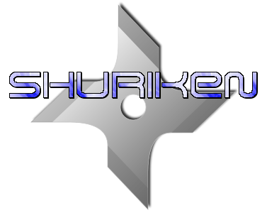

Shuriken is an open source beat slicer which harnesses the power of aubio's onset detection algorithms and Rubber Band's time stretching capabilities. A simple Qt4 interface makes it easy to slice up drum loops, assign individual drum hits to MIDI keys, and change the tempo of loops in real-time. The JUCE library takes care of handling audio and MIDI behind the scenes.
Main features:
- onset and beat-of-the-bar detection (via aubio)
- calculate BPM
- time stretching in offline or real-time mode (via rubberband)
- sync BPM of a drum loop to JACK transport
- slice and un-slice waveform
- each audio slice automatically assigned to its own MIDI key
- move and delete audio slices
- apply gain, gain ramp, normalise, and reverse
- loop audio playback
- ALSA and JACK MIDI
- LADISH L1 session management (also compatible with NSM via nsm-proxy)
- zoom waveform in and out with mouse wheel
- import a wide range of audio file formats (via libsndfile and the built-in sndlib library)
- export audio slices in WAV, AIFF, AU, FLAC, or Ogg format, with options for encoding and sample rate
- export Hydrogen Drumkit, SFZ, Akai .pgm, or MIDI file